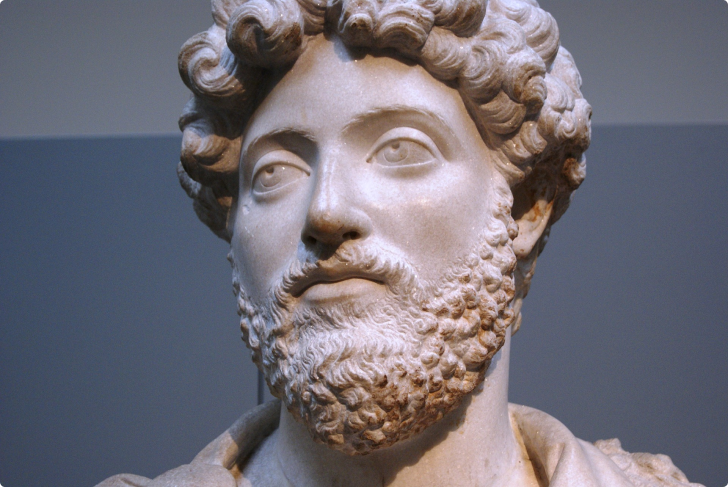

Um pouco da história de
Marco Aurélio
Marco Aurélio Antonino, foi o ultimo dos cinco bons imperadores, comandou o imperio Romano de 161 até 180.
Nascido em uma familia aristocrata, se dedicou à filosofia, especificante ao estoicismo, é autor de umas das obras mais conhecida hoje no campo da filosofia estoica, "Meditações de Marco Aurélio".O seu nome de nascença na verdade é Marco Ânio Vero, seu sobrenome foi alterado quando é adotado por seu tio Antonio Pio, o sucessor do imperador Adriano, Pio tornou Aurélio herdeiro do trono.
Falando sóbre o seu livro “Meditações de Marco Aurélio”.
O título original do livro é Τὰ εἰς ἑαυτόν que siginifica “pensamentos endereçados a si mesmo”, isso é, o livro tinha apenas a inteção de ser lido por uma pessoa, ele mesmo. Marco escrevia suas reflexões sem muitas palavras, porem bem elaboradas e que carregando bastante sabedoria. O livro foi montado por um discípulo, que pós a morte do imperador as compilou tudo em livro e nomeou de "Meditações de Marco Aurélio."
O imperador: Assumindo o trono em 161 junto com seu irmão adotivo Lúcio Aurélio Vero, governavam de acordo com o estoicismo, um dos seus primeiros problemas foi contra os cristãos, naquela epoca religião e política eram inseparáveis, portanto quem não estava de acordo com o estoicismo não estava de acordo com o estado.
Seu governo foi marcado por guerras, ele além de um otímo escritor também era um excelente guerreiro, um extraordinário administrador e um grande imperador. O seu lugar de escrita era o campo de batalha, seus pensamentos eram registrados em forma de diário.
Em 169 com a morte de Lúcio começou a governar sozinho e só teve um segundo co-imperador em 177, seu filho Cômodo, em 180 morreu, durante uma expedição contra os marcomanos, a Roma depois de sua morte começou a declinar, pois o seu sucessor, Cômodo era um imperador egôcentrico e que não soube liderar Roma.